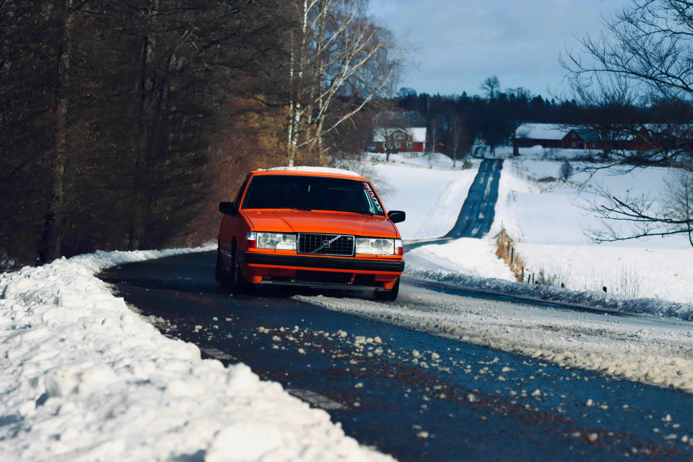
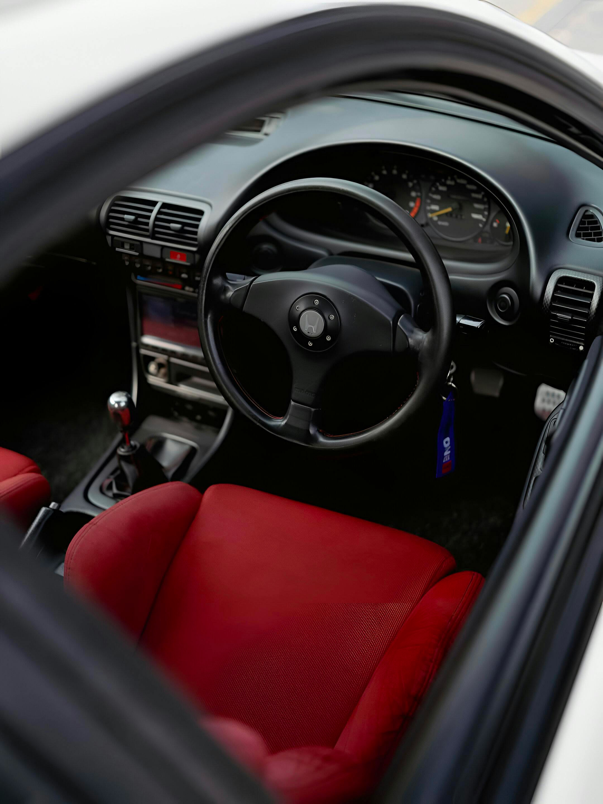

Intro
Youngtimers zijn allang niet meer alleen goedkope oude auto's met een leuke vibe. Voor veel liefhebbers zijn het precies de modellen die nog karakter, mechanische betrokkenheid en herkenbare bouwkwaliteit hebben, zonder dat ze meteen in het museumsegment vallen. Een BMW E46 of BMW E36 voelt nog analoog genoeg om interessant te blijven. Een Subaru Impreza GT Turbo of Audi S3 8L heeft precies dat rauwe, compacte prestatiegevoel dat moderne auto's vaak missen. Een Volvo 850 T5, Mercedes W124, Mazda MX-5, Saab 900 Turbo, Honda Prelude of Volkswagen Golf GTI mk2, mk3 of mk4 heeft zijn eigen trouwe liefhebbersbasis om dezelfde reden.
Maar hoe interessanter een auto wordt voor liefhebbers, hoe belangrijker het wordt om onderhoud, revisies, restauratie en modificaties goed vast te leggen. Juist bij youngtimers is de vraag niet alleen of een auto goed rijdt, maar vooral wat je kunt aantonen. Is de distributieriemhistorie bekend? Is die turbovervanging ergens gedocumenteerd? Is roestherstel echt gedaan, of is het vooral een goed verhaal? Zijn facturen, APK-momenten, kilometerstanden en foto's centraal bewaard, of hangt alles nog ergens verspreid in mappen, telefoons en oude e-mailboxen?
Daarom is een digitaal onderhoudsboekje voor je youngtimer geen luxe. Het is een praktische manier om waarde, betrouwbaarheid en historie vast te leggen. En wie naast documentatie ook gewoon dagelijks het onderhoud van je youngtimer wil bijhouden, merkt al snel dat een centrale digitale aanpak veel rust geeft.
Artikel
Wat maakt onderhoud bij een youngtimer anders?
Onderhoud aan een youngtimer is anders dan onderhoud aan een vrij nieuwe leaseauto. Dat klinkt logisch, maar het verschil zit dieper dan alleen leeftijd. Een oudere liefhebbersauto krijgt namelijk niet alleen te maken met regulier onderhoud, maar ook met veroudering, stilstand, specialistische onderdelen, vorige eigenaren en een geschiedenis die zelden nog volledig via dealerkanalen te reconstrueren is.
Leeftijd speelt als eerste mee. Rubbers drogen uit, slangen verharden, koelsystemen worden kwetsbaar, pakkingen gaan zweten en lagers krijgen te maken met jaren van gebruik of juist stilstand. Een BMW E46 met keurig lakwerk kan alsnog een koelsysteem hebben dat op aandacht wacht. Een Mercedes W124 kan technisch onverwoestbaar lijken, maar alsnog laswerk, onderstelrubbers of oude remleidingen nodig hebben. Een Mazda MX-5 kan vrolijk rijden terwijl de echte uitdaging onder de dorpels of in wielkasten zit.
Onderdelenbeschikbaarheid is het volgende punt. Sommige delen zijn nog ruim beschikbaar, andere alleen via specialisten, gebruikte voorraden of liefhebbersnetwerken. Daardoor worden keuzes belangrijker. Kies je OEM, aftermarket of refurbished? Welke leverancier leverde die turbo voor je Volvo 850 T5? Welke rubbers en draagarmen zijn op je BMW E36 gezet? Die context wil je later kunnen terugvinden.
Ook stilstand is een typische youngtimer-factor. Veel van deze auto's rijden niet dagelijks. Ze staan in de winter binnen, worden projectmatig aangepakt of maken vooral mooie weekendkilometers. Dat betekent dat kalenderleeftijd soms net zo belangrijk is als kilometerstand. Een distributieriem kan qua kilometers nog prima lijken, maar qua leeftijd allang aandacht vragen.
Daarbovenop komen importhistorie, restauratie en modificaties. Een import Audi S3 8L zonder heldere map met historie roept meteen vragen op. Een Subaru Impreza GT Turbo met upgrades, andere turbo, andere intercooler en aangepaste mapping is interessant, maar alleen als je kunt laten zien wat wanneer is gedaan. Een Golf GTI mk2 of mk3 kan technisch prachtig zijn, maar als de build history kwijt is, blijft veel waarde onzichtbaar. Voor veel eigenaren geldt bovendien dat ze zelf sleutelen. Dat is op zich geen probleem, maar zelf onderhoud dat nergens staat, telt in de praktijk bijna niet mee als bewijs.
Waarom een papieren onderhoudsboekje vaak niet genoeg is
Een klassiek papieren onderhoudsboekje heeft nog steeds emotionele waarde. Een map met oude stempels voelt tastbaar, origineel en geruststellend. Alleen: voor de meeste youngtimers is dat in de praktijk niet meer genoeg. Soms is het boekje kwijt. Soms is het incompleet. Soms lopen de stempels maar tot 2007 en is daarna alles op goed vertrouwen doorgegeven. En vaak zegt een stempelboekje vooral dat er ooit iets is gedaan, maar niet precies wat.
Daar begint het probleem. Oude papieren facturen liggen verspreid. Eén map zit in de auto, een tweede ordner ligt op zolder, wat losse bonnetjes zitten nog in een dashboardkastje en de rest is ooit gefotografeerd met een telefoon die allang vervangen is. Als het onderhoudsboekje auto kwijt is, of de belangrijkste facturen ontbreken, verdwijnt de samenhang meteen.
Bij een youngtimer spelen bovendien veel zaken die een traditioneel boekje nooit goed vangt. Zelf uitgevoerd onderhoud staat er niet in. Upgrades en modificaties worden meestal niet vastgelegd. Voor-nafoto's van roestherstel, laswerk, motorrevisie, remrevisie of onderstelwerk passen al helemaal niet tussen papieren stempels. Hetzelfde geldt voor een restauratieproject waarbij onderdelen in fases zijn gekocht en gemonteerd.
Dat merk je pas echt wanneer iemand kritische vragen stelt. Wanneer is de distributieriem gedaan? Welke olie is gebruikt? Wanneer zijn turbo, koppeling, remmen of onderstelrubbers aangepakt? Als je dan moet antwoorden met “ergens moet nog een bon liggen”, zakt de overtuigingskracht direct weg. Een youngtimer onderhoudsboekje dat digitaal is opgebouwd, is juist sterk omdat je niet alleen een boekje hebt, maar een complete context met facturen, foto's, kilometerstanden en toelichting.
Voorbeelden per type youngtimer
BMW E46 en BMW E36
Bij een BMW E46 of BMW E36 draait documentatie vaak om terugkerende zwakke punten en onderhoud dat over meerdere jaren is uitgesmeerd. Denk aan koelsysteem, thermostaat, expansievat, waterpomp, draagarmen, rubbers, uitlijning, oliebeurten en pakkingen. Zeker bij een sportiever exemplaar of een auto met schroefset, andere velgen of remupgrades wil je kunnen laten zien wat origineel is, wat vervangen is en waarom. Een digitale tijdlijn voorkomt dat onderstelwerk, roestherstel of VANOS-gerelateerde notities wegzakken in losse administratie.
Subaru Impreza GT Turbo
Een Subaru Impreza GT Turbo is typisch een auto waarbij incomplete documentatie direct vragen oproept. Is de turbo vervangen? Wanneer is de distributie gedaan? Is de auto getuned? Welke onderdelen zijn daarbij gebruikt? Zijn olie-intervallen netjes aangehouden? Bij een auto waar vermogen en betrouwbaarheid zo sterk samenhangen, maakt een goed opgebouwde onderhoudshistorie echt het verschil tussen een spannend verhaal en een geloofwaardige auto.
Volvo 850 T5
Een Volvo 850 T5 is populair omdat hij bruikbaarheid combineert met karakter, maar juist daardoor zie je veel exemplaren met een lange gebruiksgeschiedenis. Dan wil je weten wat er rond turbo, koeling, slangen, pakkingen, automaat- of handbakonderhoud, remmen en kilometerstanden is gebeurd. Hetzelfde geldt voor onderdelen die in de loop van de jaren vervangen zijn door aftermarket-alternatieven. Zonder centrale vastlegging is dat later lastig terug te halen.
Audi S3 8L
Bij een Audi S3 8L willen liefhebbers meestal duidelijkheid over turbohistorie, distributie, Haldex-onderhoud, koppeling, remmen en modificaties. Veel auto's hebben ooit een andere uitlaat, software, intercooler of onderstelsetup gekregen. Die keuzes zijn niet per se negatief, maar ze moeten wel gedocumenteerd zijn. Een importauto zonder historie en zonder bewijs van dit soort werk blijft bijna altijd twijfel oproepen.
Mazda MX-5
Bij een Mazda MX-5 gaat het niet alleen om oliebeurten en regulier onderhoud, maar ook om roestcontrole, onderstel, cabriodak, afwatering en carrosseriewerk. Veel eigenaren sleutelen zelf. Dat maakt goede documentatie extra belangrijk, juist omdat een nette MX-5 vaak een combinatie is van liefde, preventief onderhoud en kleine correcties over langere tijd.
Mercedes W124
Een Mercedes W124 heeft de reputatie van duurzaamheid, maar dat betekent niet dat historie minder belangrijk is. Integendeel. Bij een W124 wil je kilometerstanden, groot onderhoud, restauratiefases, laswerk, ophanging, remmen en cosmetisch herstel goed terug kunnen zien. De auto is vaak sterker wanneer zijn verhaal klopt dan wanneer hij alleen mooi oogt.
Volkswagen Golf GTI mk2, mk3 en mk4
Bij een Golf GTI spelen originele staat, tuning, onderhoud en build history vaak door elkaar heen. Heeft die auto nog zijn originele setup? Is hij ooit overgespoten? Welke upgrades zijn gedaan? Hoe zit het met distributie, remmen, chassiswerk of interieurdelen? Een digitaal dossier helpt om een GTI niet te reduceren tot losse claims, maar als complete liefhebbersauto te presenteren.
Saab 900 Turbo en Honda Prelude
Een Saab 900 Turbo of Honda Prelude trekt vaak kopers die weten waar ze naar kijken. Juist dan is specialistisch onderhoud belangrijk. Onderhoud door merk- of modelspecialisten, revisiewerk, onderdelenkeuzes en technische notities wil je niet kwijt. Bij auto's die al schaars worden, heeft een goed bewaakte historie extra gewicht.
Wat moet je digitaal bijhouden?
Wie youngtimer onderhoud digitaal wil bijhouden, hoeft het niet ingewikkeld te maken. Het belangrijkste is dat je consequent bent. Dit zijn de gegevens die in de praktijk de meeste waarde hebben:
- Datum: wanneer is het werk uitgevoerd?
- Kilometerstand: essentieel voor onderhoudsintervallen en geloofwaardigheid.
- Omschrijving: wat is er precies gedaan, van oliebeurt tot laswerk of motorrevisie.
- Kosten: handig voor inzicht in investeringen en totale historie.
- Facturen en bonnetjes: bewijs van onderdelen, garagewerk en revisies.
- Foto's: voor-nafoto's, detailfoto's en restauratiebeelden.
- Onderdelen: welke filters, rubbers, slangen, turbo's, remdelen of OEM-onderdelen zijn gebruikt.
- Upgrades en modificaties: uitlaat, ECU, intercooler, onderstel, remmen, velgen of interieurwerk.
- APK en kilometerhistorie: zodat controles en ontwikkelingen logisch te volgen blijven.
- Distributieriem of kettingwerk: een van de eerste dingen waar kopers naar vragen.
- Oliebeurten: met type olie en intervallen.
- Banden, remmen en onderstel: juist bij liefhebbersauto's belangrijke kostenposten.
- Restauratie- of revisiewerk: motor, carrosserie, plaatwerk, laswerk, lak, interieur of aandrijflijn.
Juist die combinatie maakt het verschil tussen wat losse administratie en een echte onderhoudshistorie van je youngtimer.

Hoe GarageBook dit oplost
GarageBook is sterk voor youngtimers omdat het niet alleen werkt als logboek, maar als centraal voertuigarchief. Je kunt onderhoudslogs toevoegen, kilometerstanden vastleggen, documenten uploaden, foto's bewaren en kosten per moment terugvinden. Daardoor ontstaat een visuele tijdlijn die niet alleen voor jou logisch is, maar ook voor een taxateur, specialist of koper.
Dat is precies waarom de twee belangrijkste youngtimer-pagina's op GarageBook elkaar aanvullen. Als je vooral zoekt naar context rond bewijs, documentatie en historie, dan past het digitale onderhoudsboekje voor je youngtimer perfect. Als je meer bezig bent met het dagelijkse ritme van onderhoudslogs, planningen en werkmomenten, dan sluit het onderhoud van je youngtimer bijhouden daar direct op aan.
Concreet betekent dat:
- je onderhoudsmomenten centraal logt
- facturen en documenten aan het juiste moment koppelt
- foto's van restauratie, revisie of modificaties bewaart
- kilometerstanden structureel vastlegt
- kosten en onderdelenhistorie terugziet
- een tijdlijn opbouwt die je kunt delen of exporteren
- meerdere voertuigen in hetzelfde account kunt beheren
Dat maakt GarageBook niet alleen bruikbaar voor youngtimers, maar ook voor hobbyauto's, oldtimers en zelfs motoren. Daarom zijn gerelateerde pagina's zoals onderhoudsboekje oldtimer, motor onderhoud bijhouden, motor onderhoud schema, motor onderhoud in Excel en motor onderhoud app logisch vervolgverkeer binnen dezelfde onderhoudsfilosofie.
Waarom dit verkoopwaarde ondersteunt
Een digitale onderhoudshistorie garandeert geen vaste prijsstijging, maar ondersteunt wel iets dat bij youngtimers minstens zo belangrijk is: vertrouwen. Kopers voelen het verschil tussen een auto waarbij alles mondeling moet worden uitgelegd en een auto waarbij onderhoud, build history, revisies en investeringen rustig door te nemen zijn.
Minder discussie is vaak al winst. Als iemand kan zien dat motorrevisie, onderstelwerk, remmen, laswerk of een turbovervanging daadwerkelijk gedocumenteerd zijn, verdwijnt veel onzekerheid. Ook de waarde van onderdelen en werk wordt beter zichtbaar. Dat maakt een auto niet automatisch duurder, maar wel beter onderbouwd. En dat is precies waarom een sluitende historie professioneler aanvoelt.
Bij projectauto's is dat misschien nog wel belangrijker. Een restauratieproject met foto's en facturen op verschillende plekken oogt chaotisch, zelfs als het werk goed is. Een centrale digitale historie laat juist zien dat er met aandacht is gewerkt. Daarmee voorkom je dat een complete build history alsnog verloren raakt.
Youngtimer onderhoud bijhouden: een praktische workflow
Wie nu een youngtimer koopt of al jaren een liefhebbersauto bezit, hoeft niet te wachten op “het perfecte moment” om orde aan te brengen. Een praktische workflow werkt beter:
- Maak eerst je voertuig aan en gebruik GarageBook als centrale plek voor de auto.
- Upload daarna bestaande facturen, oude onderhoudsbonnen, APK-documenten en screenshots van bestellingen die je nog hebt.
- Voeg de grote historische momenten toe die je zeker weet: distributieriem, turbovervanging, groot onderhoud, revisie, laswerk of onderstelwerk.
- Documenteer vanaf nu elk nieuw onderhoudsmoment direct, hoe klein ook.
- Maak foto's tijdens onderhoud, restauratie of upgrades en koppel die meteen aan het juiste moment.
- Gebruik GarageBook daarna als vaste onderhoudshistorie van de auto, niet als losse archiefmap die je pas opent als je wilt verkopen.
Dat is de snelste manier om van versnipperde administratie naar een betrouwbaar overzicht te gaan. Ook als een deel van de oude historie ontbreekt, kun je vanaf vandaag alsnog een sterke nieuwe basis opbouwen. Precies daarom werkt een youngtimer onderhoudslogboek in de praktijk beter dan wachten tot alles perfect compleet is.
Veelgemaakte fouten
De meeste problemen ontstaan niet door slecht onderhoud, maar door slechte vastlegging. Dit zie je het vaakst:
- alleen facturen bewaren, maar geen kilometerstanden noteren
- foto's op de telefoon laten staan zonder context of datum
- upgrades en modificaties niet documenteren
- zelf gedaan onderhoud niet opschrijven omdat het “toch simpel was”
- pas gaan documenteren op het moment dat verkoop dichterbij komt
- projectfasen niet vastleggen, waardoor later niemand meer weet wat wanneer is gebeurd
Bij youngtimers is dat extra zonde, omdat juist de details waarde opbouwen. Een onbekende distributieriemhistorie, een niet-gedocumenteerde turbovervanging of een losse verzameling restauratiefoto's kan onnodig veel twijfel oproepen. Terwijl hetzelfde werk, goed vastgelegd, juist rust en overtuiging geeft.
Conclusie
Een youngtimer is meer dan een vervoermiddel. Het is vaak een liefhebbersauto, een project, een geheugenmachine en soms zelfs een investering. Juist daarom hoort de documentatie net zo serieus genomen te worden als het sleutelen zelf. Of je nu een BMW E46, Volvo 850 T5, Mercedes W124, Mazda MX-5, Subaru Impreza GT Turbo, Golf GTI of Saab 900 Turbo rijdt: onderhoud dat niet is vastgelegd, verdwijnt sneller dan je denkt.
Wie vandaag begint met een digitaal onderhoudsboekje voor je youngtimer en consequent youngtimer onderhoud digitaal bijhoudt, bouwt aan iets dat later echt telt: een sluitend verhaal. Dat helpt bij planning, bij eigen overzicht, bij restauratie en uiteindelijk ook bij vertrouwen tijdens verkoop.

Meer lezen over youngtimers, historie en onderhoud
Wil je hier direct op doorpakken, lees dan verder over een digitaal onderhoudsboekje voor je youngtimer, ontdek hoe je structureel het onderhoud van je youngtimer bijhoudt, vergelijk met een onderhoudsboekje voor oldtimers en bekijk ook de praktische invalshoeken van motor onderhoud bijhouden, een onderhoudsschema, onderhoud in Excel en een moderne onderhoudsapp.
Veelgestelde vragen over youngtimer onderhoud en digitale historie
Hoe houd ik onderhoud van mijn youngtimer digitaal bij?
Door per onderhoudsmoment datum, kilometerstand, werkzaamheden, onderdelen, kosten, facturen en foto's centraal op te slaan in een digitaal onderhoudsboekje zoals GarageBook.
Wat als het onderhoudsboekje van mijn youngtimer kwijt is?
Dan kun je oude facturen, e-mails, APK-documenten, foto's en garagehistorie alsnog verzamelen en vanaf nu een nieuwe digitale onderhoudshistorie opbouwen die weer logisch en aantoonbaar is.
Is GarageBook geschikt voor BMW E36 of BMW E46 onderhoud?
Ja. Juist voor BMW E36 en BMW E46 is het handig om koelsysteem, onderstel, oliebeurten, pakkingen, roestherstel en modificaties goed vast te leggen.
Hoe documenteer ik restauratie of modificaties van mijn youngtimer?
Leg per fase vast wat er is gedaan, welke onderdelen zijn gebruikt, wat het kostte en voeg foto's en facturen toe. Zo blijft de build history bruikbaar in plaats van verspreid over losse plekken.
Verhoogt een digitale onderhoudshistorie de verkoopwaarde?
Een complete digitale historie geeft kopers meer vertrouwen, vermindert discussie en helpt om investeringen, revisies en onderhoud beter te onderbouwen. Dat ondersteunt vaak een sterkere verkooppositie.
Kan ik ook foto's en facturen bewaren bij mijn onderhoudslogs?
Ja. Foto's, facturen, onderdelenbonnen en revisiebewijzen maken je onderhoudslogs veel geloofwaardiger en bruikbaarder voor planning, taxatie en verkoop.
Leg vandaag de historie van je youngtimer digitaal vast
Wacht niet tot het onderhoudsboekje kwijt is, de facturen verspreid liggen of een koper kritische vragen stelt. Start gratis met GarageBook en maak van onderhoud, foto's, kilometerstanden en restauratie één complete youngtimerhistorie.